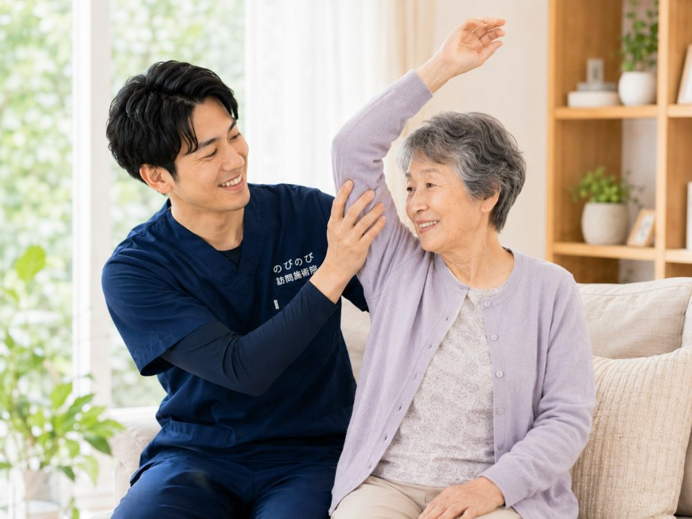
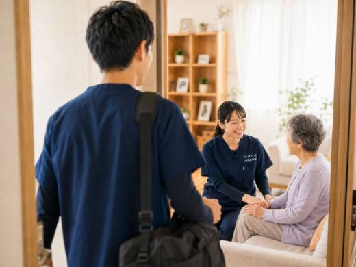
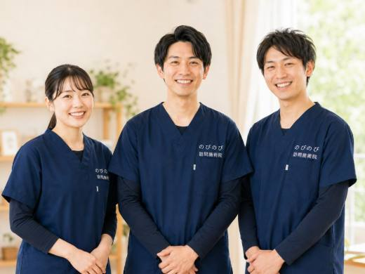
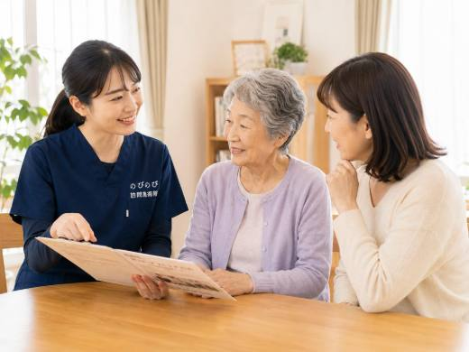
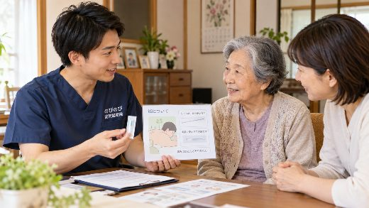

「1回の施術って、どれくらいの時間がかかるの？」。はじめて訪問鍼灸マッサージを考えるとき、まず気になるのが時間のことだと思います。一日の予定にどう組み込めばいいのか、短い時間で意味があるのか、当日は何をするのか。そうした素朴な疑問に、順を追ってお答えします。結論から言えば、1回はおおむね20〜30分が目安。ただし時間の長さだけで内容は決まりません。
はじめに要点だけ。1回の施術は、準備や体調確認、後片づけまで含めておおむね20〜30分が目安です。実際の時間はその方の状態やその日の様子で変わり、短くても体に合わせて必要なケアを組み立てます。当日は、到着後の体調確認から、鍼・灸・手技・機能訓練を姿勢に合わせて行い、最後に次回の相談まで。特別な準備や着替えは要らず、寝たきりや座ったままでも受けられます。費用は時間の長短で変わらず、1回の総額3,950円（1割の方で約395円）です。
1回の施術は、だいたいどれくらい？
訪問鍼灸マッサージの1回は、うかがってからの準備、お体の確認、施術、後片づけまでをすべて含めて、おおむね20〜30分ほどを目安に考えていただくとよいでしょう。実際にかける時間は、その方の症状や体調、その日の様子によって前後します。あらかじめ「必ず何分」と決め込むより、幅をもって見ていただくと安心です。
気をつけたいのは、時間の長さだけで内容を判断しないことです。長く受ければよいというものではなく、ご高齢の方や体力の落ちている方の場合、短めにこまめに続けるほうが体への負担が少なく、調子を保ちやすいこともあります。短い時間でも、その日のお体の状態を見て、必要なケアを組み立てます。生活のリズムやご希望に合わせて、無理のない時間で進めます。
当日は、どんな流れで進む？
当日は、まず到着したら、その日の体調やお変わりがないかをうかがうところから始めます。血圧や顔色、痛みやこわばりの出方などを見て、その日に行う内容を決めます。次に、いちばん楽な姿勢になっていただき、施術に入ります。終わったあとは、お体の様子や次回までに気をつけるとよいことをお伝えし、次の予定について相談します。
到着から見送りまで、あわてて詰め込むことはしません。着替えが要る場合も、負担にならないよう配慮します。ご家族が立ち会いたいときは、その場でお体の様子をお伝えできます。何をしているのか分からないまま進む、ということがないよう、区切りごとにひと言そえながら進めます。
施術の中身は、状態に合わせて組み立てます
施術は、はり師・きゅう師の国家資格を持つ者がうかがい、鍼やお灸を中心に行います。これに加えて、手でほぐす手技や、関節を動かす機能訓練を、その方の状態に合わせて組み合わせます。手技や機能訓練は、鍼灸に加えて行うケアです。これらについて別途の料金はいただきません。どれをどれだけ行うかは、その日のお体を見て決めます。
たとえば、こわばりが強い日は手でゆるめる時間を多めに、動きが出しにくい日はその日の体に合わせて関節を動かす、といった具合です。刺激の強さも、その日の体調に合わせて弱めたり控えめにしたりできます。効果の出方には個人差がありますので、一度で結論を急がず、続けながらその方に合う内容を探していきます。
体調に合わせて、時間や刺激を調整します
その日の体調がすぐれないときは、時間を短くしたり、刺激を弱めたりできます。反対に、調子のよいときは、動かす運動を少し多めにする、といった調整もします。決まった時間をきっちり守ることより、その日のお体に合わせることを大事に進めます。
疲れが出そうなときは、無理に続けず、その日は早めに切り上げることもあります。ご本人やご家族が「今日は短めにしたい」と感じたら、遠慮なくお伝えください。パーキンソン病などで調子に波がある方は、動きやすいタイミングに合わせると、より楽に受けられます。
特別な準備や、服装は要りません
「何か用意しておくことはある？」と聞かれることがありますが、特別な準備は要りません。いつもの服装のままで受けられます。腕や足を出して施術する場合も、ゆったりした服ならそのままで、必要なときは軽くまくる程度です。こちらから着替えを求めることはありません。
強いて挙げれば、飲んでいるお薬や、かかりつけの医療機関が分かるものが手元にあると、初回のお話がスムーズです。身がまえずに、いつもどおりの状態でお迎えいただければ大丈夫です。
部屋の広さや、寝たきりでも大丈夫？
「うちは狭いけれど受けられる？」という心配もよく聞きます。場所は、ふだん過ごしているベッドや椅子のまわりがあれば十分で、広い空間を空けていただく必要はありません。ご自宅でも施設でも、いつもの生活の場でそのまま受けられます。
寝たきりの方は、横になったままで受けられます。起き上がるのがつらい方に無理な姿勢をお願いすることはありません。座ったままがよい方は椅子や車いすの姿勢で、そのときいちばん楽な形に合わせて施術します。姿勢を大きく変えられない方でも、届く範囲でできるケアを組み立てます。
一日のなかで、いつ受けるのがよい？
訪問の時間帯は、ご家庭のご都合に合わせて相談できます。体が動きやすい時間に合わせたい、デイサービスに行く前や帰ったあとにしたい、ご家族が立ち会える時間にしたい。こうしたご希望に、できる範囲で合わせます。食事の直後や入浴の直前直後は避けたほうがよい場合もあるので、目安はお伝えします。
デイサービスや訪問介護、訪問看護など、ほかのサービスを使っている方もよくいらっしゃいます。同じ日に重なっても、時間帯をずらせば受けられることがほとんどです。一日に予定が多すぎて疲れないよう、全体のバランスを見ながら曜日や時間を組みます。ケアマネジャーがいる方は、連携しながら無理のないスケジュールを考えます。
どれくらいの頻度で続ける？
1回の時間とあわせてよく聞かれるのが、頻度です。体の状態やご希望によりますが、週1〜2回で続ける方が多くいます。間があくとつらさが戻りやすい方は、こまめに続けるほうが調子を保ちやすいこともあります。逆に、落ち着いてきたら回数を減らす、という調整もできます。
費用はその月に受けた回数分だけなので、はじめから多く組む必要はありません。無理のないペースから始めて、様子を見ながら決めていけます。続けるうちに合う頻度が見えてくることも多いので、迷ったら少なめから試すのがおすすめです。
初めての回は、少し時間をとります
初回は、お体の状態をていねいにうかがい、痛みやこわばりの出方、生活の様子、通院や服薬の状況などを確認します。そのため、二回目以降より少し時間がかかることがあります。ここで状態を把握しておくと、次回からのケアをその方に合った内容で無理なく進められます。
初回だからといって、あわてて詰め込むことはしません。ご本人の負担にならないよう、様子を見ながら進めます。分からないことや不安なことも、この機会に遠慮なくお聞きください。保険を使うには医師の同意書が必要ですが、その手続きはのびのび訪問施術院が段取りします。
料金は時間の長さではなく、1回いくらで決まります
気になる料金ですが、費用は施術の時間の長さで変わりません。1回あたりの決まった料金があり、施術の総額は3,950円、自己負担は1割の方でおよそ395円が目安です。長くかかったから高くなる、短いから安くなる、ということはないので、その日の体調に合わせて時間を調整しても料金は変わりません。
費用は医療保険で計算し、介護保険の区分支給限度額とは別枠です。ほかのサービスの利用枠とは別に受けられます。別途の出張費（出張料・交通費）はかからず、エリア内はどこでも同額です。お支払いは月ごとにまとめてお願いしています。内訳はあとからでも確認できます。効果の出方には個人差がありますので、無理のない時間とペースから始めていただければと思います。
よくある質問
1回の施術は何分くらいですか？
準備や体調確認、後片づけを含めて、おおむね20〜30分が目安です。症状や体調に合わせて調整し、短めにこまめに続けることもできます。時間の長さだけで内容が決まるわけではありません。
長く受けたほうが効果がありますか？
長ければよいというものではありません。ご高齢の方や体力の落ちている方は、短めにこまめに続けるほうが負担が少なく合うこともあります。その日のお体を見て、必要なケアを組み立てます。効果の出方には個人差があります。
当日はどんなことをするのですか？
到着後にその日の体調を確認し、楽な姿勢で鍼・灸・手技・機能訓練をお体に合わせて行います。最後にお体の様子と次回までの注意点をお伝えし、次の予定を相談します。
準備しておくものはありますか？
特別な準備は要らず、いつもの服装のままで受けられます。強いて挙げれば、飲んでいるお薬やかかりつけの医療機関が分かるものがあると、初回のお話がスムーズです。着替えをお願いすることはありません。
寝たきりや座ったままでも受けられますか？
受けられます。横になったまま、あるいは椅子や車いすの姿勢で、そのときいちばん楽な形に合わせて施術します。起き上がるのがつらい方に無理な姿勢をお願いすることはありません。
時間帯は指定できますか？
ご家庭のご都合に合わせて相談できます。体の動きやすい時間や、デイサービスの前後、ご家族が立ち会える時間などに、できる範囲で合わせます。食事や入浴の直後は避けたほうがよい場合もあります。
デイサービスの日でも受けられますか？
時間帯をずらせば受けられることがほとんどです。一日に予定が多すぎて疲れないよう、全体のバランスを見て曜日や時間を組みます。ケアマネジャーがいる方とは連携して調整します。
時間が短くても料金は変わりませんか？
変わりません。費用は時間の長さではなく1回いくらで決まり、総額3,950円（1割の方で約395円）が目安です。別途の出張費はかからず、エリア内は同額。介護保険の限度額とは別枠で計算します。

訪問鍼灸マッサージ、当日の準備と立ち会いは？｜はじめての方へ
続きを読む
訪問鍼灸マッサージの頻度は週何回、1回何分？時間と回数の目安
続きを読む
訪問鍼灸マッサージは土日・祝日・夜間も受けられる？対応時間と予約のこと
続きを読む
鍼は痛い？お灸は熱い？ 初めて訪問鍼灸マッサージを受ける方の不安にお答えします
続きを読む
初めての方へ｜訪問鍼灸マッサージの申し込みから施術までの流れ
続きを読む